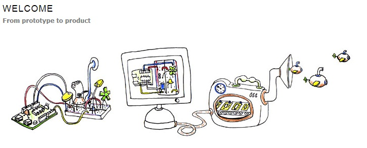
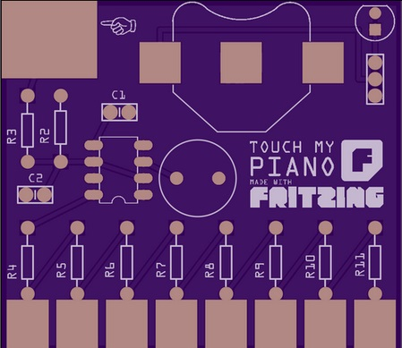
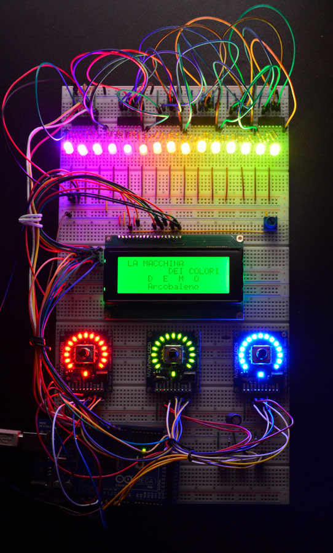

2014-08-30
Fom phisical prototyping to actal product，Fritzing！
Fritzing是一個開放源碼的網站，由Andre Knörig在德國應用科學大學的交互設計實驗室開發完成，起初只是一個單純的研究項目，現在則為10000名以上使用者紀錄與分享自己電子原型的開放分享平台，2007年Fritzing以arduino和processing的創建精神出發，支持使用者能持續創造性的開展工作，在這裡用戶可以紀錄並分享自己的電子基礎原型，用以製造印刷電路板的佈局，更可以促進用戶分享並討論自身經驗及草稿，達到分享及互惠之效，如此一來，除了可以提升製造效率之外更可以降低製造成本，集結眾人力量縮短產品開發週期。
Fritzing現行的主要計劃有四：計劃紀錄、分享設計、教育學習、印刷電路板(PCB)製造。提供設計師、藝術家、電子從業人員及相關愛好者可以採取網站上開放的步驟，一步一步的從基礎的原型到完整的產品成品，另外，Fritzing也強調回饋及前進的動能，經由不定期舉辦工作坊及研討會融入電子專業製造教學的場域，讓生產得以持續進步。
圖片資訊:http://fritzing.org/projects/touch-my-piano/姓名標示-相同方式分享
而在許多的努力中，Fritzing最顯為人知的貢獻則為提供一個大眾熟知的介面，在虛擬的麵包板中，存在一個簡單的圖形介面，此圖形介面作為插件版的功能，用戶可以隨時創建自己的電路，給使用者方便記錄並分享自己的想法，匯合眾人的努力後，期望可以將每一個麵包板圖轉為正式的印刷電路板製造。Fritzing以此為根基，一再地創建製造服務，將使用戶未來可透過此網站訂購其他用戶的設計，作為實質生產互惠的開放平台。Fritzing網站中草圖的使用方法同於arduino及Instructables，均以簡潔清晰的使用介面為主要訴求，提高讓使用者的使用意願，期望讓非專業領域的人士也能輕易上手。
圖片資訊:http://fritzing.org/projects/the-color-machine/姓名標示-非商業性-相同方式分享
Color Machine是從基礎原型開發而來的一例案例，作為一個提供給孩童進行色彩教育的工具，在這台機器上有三個明顯的主控按鈕，分別作為調整紅色、藍色和綠色的色彩比例，透過機器上方的LED裝置顯示，可使超過16萬種色彩生成，而色機分為四種工作模式，分別為創造顏色、猜顏色、命名顏色、展示，透過玩耍和學習孩子可以學習創造顏色，在老師的指導下，孩童更可以於操作Color Machine的過程之中熟悉RGB顏色編碼的模式，盡情的享受色彩帶來的豐富精彩，此設備目前於義大利的Museum of Industry and Labour of Rodengo Saiano做教育使用用途。
Fritzing的開放方式建立在創用CC條款之下，從基本的電子到完整的資料建置使用開放格式的文件系統SVG/XML，以各作者選定的開放方式釋出，鼓勵開放共享的知識，在這網站中只要按下共享的按鈕，你也可以輕易加入開放分享的行列。
開放分享及協力製作的時代已然來臨，許多相關的平台被作為一個現代民主化生產的工具，將共享的知識作為工具，以開放做出發，擴充於此行業從業人員無盡的想像空間，並期待可以開啟未來技術的討論，一同致力於實現一種共享的文化。
在Fritzing分享彼此、互相學習，這股力量單純來自「簡單的共享－對大家都有用」。
參考資料：
http://opendesignnow.org/index.php/case/fritzing-andre-knorig-jonathan-cohen-reto-wettach/
http://fritzing.org/projects/the-color-machine
http://fritzing.org/media/uploads/publications/FritzingInfoBrochure-highRes.pdf